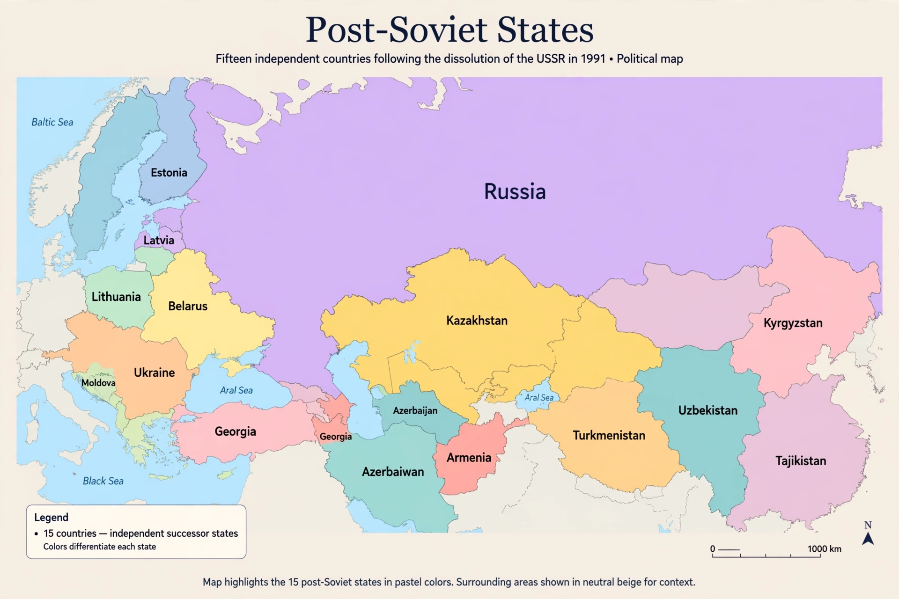

The post-Soviet states, also referred to as the former Soviet Union (FSU), are the fifteen sovereign states that emerged after the dissolution of the Union of Soviet Socialist Republics in 1991.
Armenia, Azerbaijan, Belarus, Estonia, Georgia, Kazakhstan, Kyrgyzstan, Latvia, Lithuania, Moldova, Russia, Tajikistan, Turkmenistan, Ukraine, and Uzbekistan. The Baltic states (Estonia, Latvia, Lithuania) regard their independence as restoration of pre-1940 statehood and do not consider themselves successor states.
Many joined the Commonwealth of Independent States (CIS, 1991). Others include the CSTO, Eurasian Economic Union, GUAM, and the Union State of Russia and Belarus. Georgia, Ukraine, and Moldova pursue EU integration; Ukraine and Georgia seek NATO ties.
Frozen conflicts include Transnistria, Abkhazia, South Ossetia, and Nagorno-Karabakh (until 2023). Russia's annexation of Crimea (2014) and full-scale invasion of Ukraine (2022) reshaped the region.
See also: Dissolution of the Soviet Union, Soviet Union